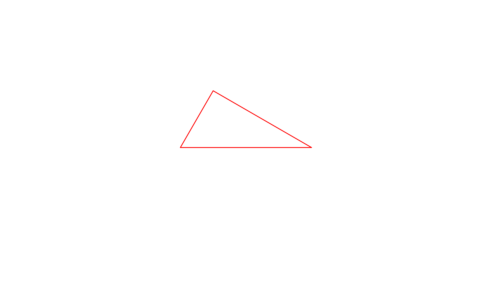
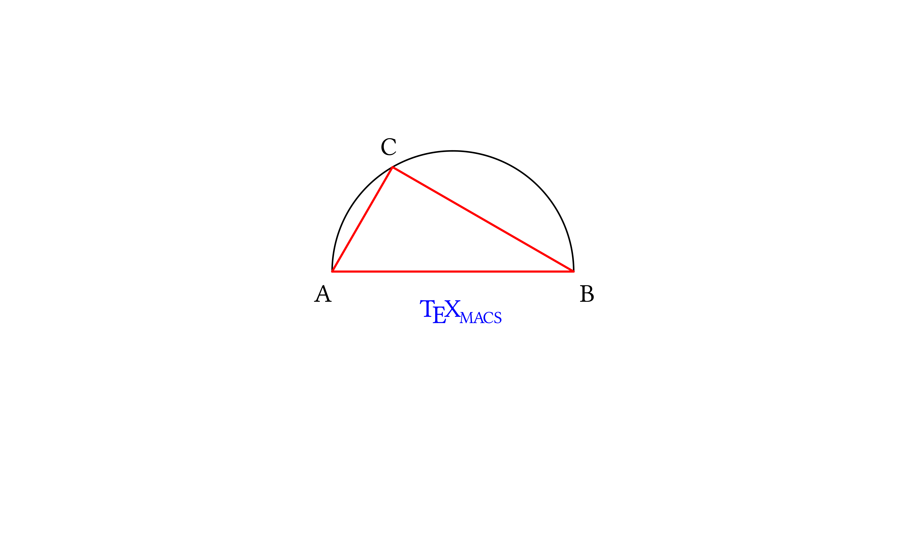

[main]Notes on TeXmacs
TeXmacs provides a set of graphic primitives, which can be accessed in
several ways: interactively with the Texmacs editor, directly through
the TeXmacs source code (TeXmacs trees) or through
In this note, we shall step through the generation of a simple drawing
starting from Scheme code and translating it into a TeXmacs tree which
then displays the graphics. We assume that the reader is familiar with
simple Scheme syntax. Two possible web resources for learning
We want to draw a triangle inscribed inside a semicircle, mark its vertices with letters and decorate the drawing with the text TeXmacs.
The most comfortable way of generating a drawing with
The first step in working with a session is opening it, with
Now we will insert our commands at the prompt. We place small comments
within text fields inserted by choosing
| Scheme] | (define pi (acos -1)) |
We will work with a circle so we need π!
| Scheme] | (define (pt x y) ‘(point ,(number->string x) ,(number->string y))) |
| Scheme] |
The Scheme function pt we just defined generates a TeXmacs graphics point parametrized by its x and y coordinates.
point is a TeXmacs graphics primitive that
represents a point and expects two strings. It is represented in
Using the pt function we shall now define a few points.
The
First of all, coordinates for the end points of the diameter, which is 4 units long while the center of the circle is at the origin:
| Scheme] | (define pA (pt -2 0)) |
| Scheme] | (define pB (pt 2 0)) |
Then the third point of the triangle, on the circumference, defined with the help of two variables xC and yC:
| Scheme] | (define xC (- (* 2 (cos (/ pi 3))))) |
| Scheme] | (define yC (* 2 (sin (/ pi 3)))) |
| Scheme] | (define pC (pt xC yC)) |
Finally the points at which we will mark the triangle's vertices with letters:
| Scheme] | (define tA (pt -2.3 -0.5)) |
| Scheme] | (define tB (pt 2.1 -0.5)) |
| Scheme] | (define tC (pt (- xC 0.2) (+ yC 0.2))) |
| Scheme] |
Let us take a look at the points we just defined. To display them as a
TeXmacs graphics, we need to insert them in a canvas with the graphics primitive, entered in
Scheme] |
(stree->tree
‘(with "gr-geometry"
(tuple "geometry" "400px" "300px" "center")
(graphics ,pA ,pB ,pC))) |
This example, with constructs boxed inside each other, is typical of
Scheme] |
(stree->tree
‘(with "gr-geometry"
(tuple "geometry" "400px" "300px" "center")
(graphics
(with "color" "blue" ,pA)
(with "color" "red" ,pB)
(with "color" "green" ,pC)))) |
| Scheme] |
This example, with constructs boxed inside each other, is typical of
The next step is composing more complex graphical objects using the points we defined.
We will use the TeXmacs graphical objects arc, line, cline and text-at.
Their meaning and
| object | description | Scheme syntax |
| arc | an arc of circle, defined by three points |
(arc point1 point2 point3) |
| line | a polyline, defined by two or more points |
(line point1 point2 [... pointn]) |
| cline | a closed polyline, defined by three or more points |
(cline point1 point2 point3 [... pointn]) |
| text-at | a text box, whose position is defined with a single point |
(text-at string point) |
Before composing the full drawing, let us take a look at one of the constructs; as an example we choose cline. We place it as usual inside a with construct to select the color and wrap it up in the graphics primitive, which is in turn enclosed in a with which sets the "gr-geometry" property of the graphics object:
Scheme] |
(stree->tree
‘(with "gr-geometry"
(tuple "geometry" "400px" "300px" "center")
(graphics
(with "color" "red" (cline ,pA ,pB ,pC))))) |

| Scheme] |
We are ready to compose our drawing; as usual the syntax is
(graphics object_1 object_2 ... object_n)
properly enclosed in other constructs, with the appropriate sequence of quasiquoting and unquotings:
Scheme] |
(stree->tree
‘(with "gr-geometry"
(tuple "geometry" "400px" "300px" "center")
(graphics
;; the arc and the line together make the semicircle
(with "color" "black" (arc ,pA ,pC ,pB))
(with "color" "black" (line ,pA ,pB))
;; a closed polyline for the triangle
(with "color" "red" (cline ,pA ,pB ,pC))
;; add letters using text-at
(with "color" "black" (text-at "A" ,tA))
(with "color" "black" (text-at "B" ,tB))
(with "color" "black" (text-at "C" ,tC))
;; finally decorate with the TeXmacs symbol
(with "color" "blue"
(text-at (TeXmacs) ,(pt -0.55 -0.75))))))
;; and close all of the parentheses!!! |

In follow-up tutorials we will see how to embed seamlessly
As a conclusion of this note, here is a collection of TeXmacs graphical objects, illustrating a few possibilities: